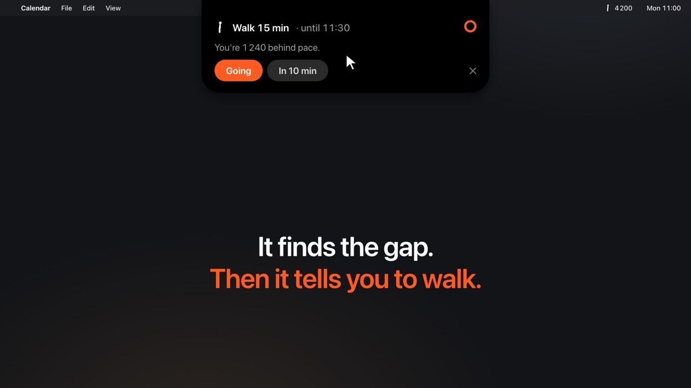

Back to back since 9.
Unsit is a Mac menu bar app that syncs with your calendar, finds the gaps between your meetings and tells you when to walk, so you reach your step and water goals on the busiest day.
Walk 15 min now.
Until 11:30, before Design review. That’s 1,500 steps, and you’re back on pace.
It reads your day the way you would, if you had time to plan it.
Your calendar, synced
Every calendar on your Mac counts: iCloud, Google, Microsoft 365, Exchange. New or moved meetings show up within 5 minutes.
Steps from your iPhone
A free Apple shortcut sends today’s steps from Apple Health. Apple Watch steps count too. No typing.
A nudge at the right moment
When a gap opens and you’re more than 300 steps behind pace, a small island grows out of the notch.

Watch the 24-second video, with sound. The day, meetings and numbers in it are made up.
Your steps, on every Mac you use.
Home Mac, work laptop, both at once. Your iPhone sends today’s steps to a private code, and every Mac with that code shows them. The work laptop doesn’t need your iCloud.
Your whole day, one click away.
Click the walking figure in the menu bar: steps against your goal, how much of today is still free of meetings, every gap on one strip, and how long to walk and when.
Your goals, not ours.
Polite, and private.
Quiet when it should be
No nudges during a meeting, when you’re away from the Mac, outside your workday, or once you’ve reached your goal. Pause it for an hour, two, or the rest of the day.
Your calendar stays on your Mac
Meetings are read on this Mac and never leave it. Only the step count and the time pass through ntfy.sh, on a channel named after your private code.
Free, and open to read
Free to download and use, with the source on GitHub under the Sustainable Use License.
Updates itself
When a new version is out, one click downloads it, checks it’s signed by its author and reopens.
Five minutes, then it runs on its own.
- Download Unsit.dmg and drag Unsit to Applications.
- Add the Unsit Sync shortcut on your iPhone and run it once.
- Allow your calendar and set your workday.
You need macOS 14 or later and an iPhone with Apple Health. Android is coming.
Prefer to build it yourself?
git clone https://github.com/jorgesousa/Unsit cd Unsit scripts/build-app.sh --open